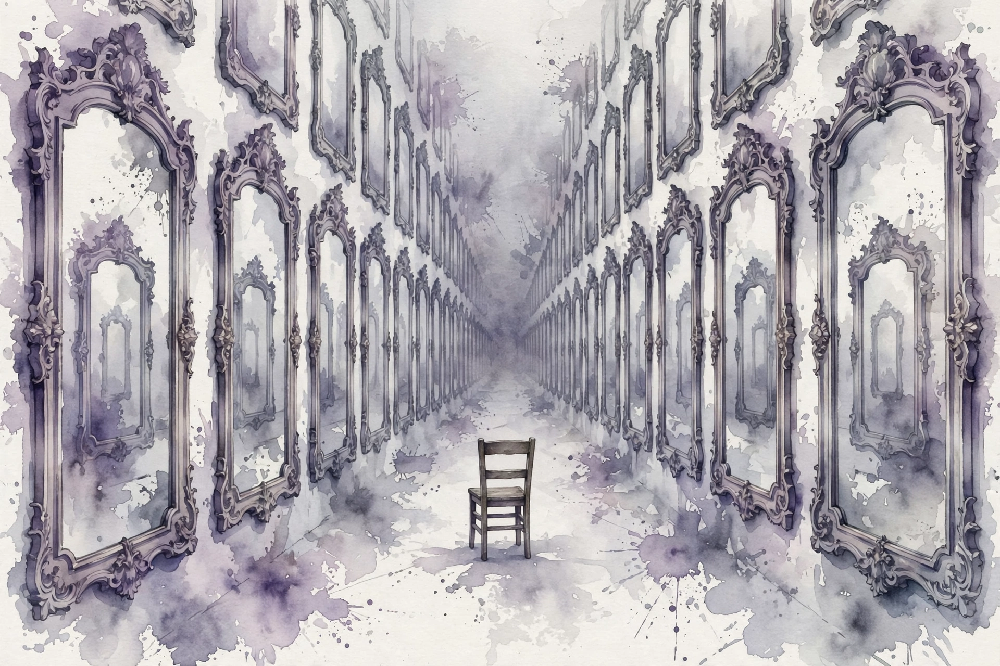
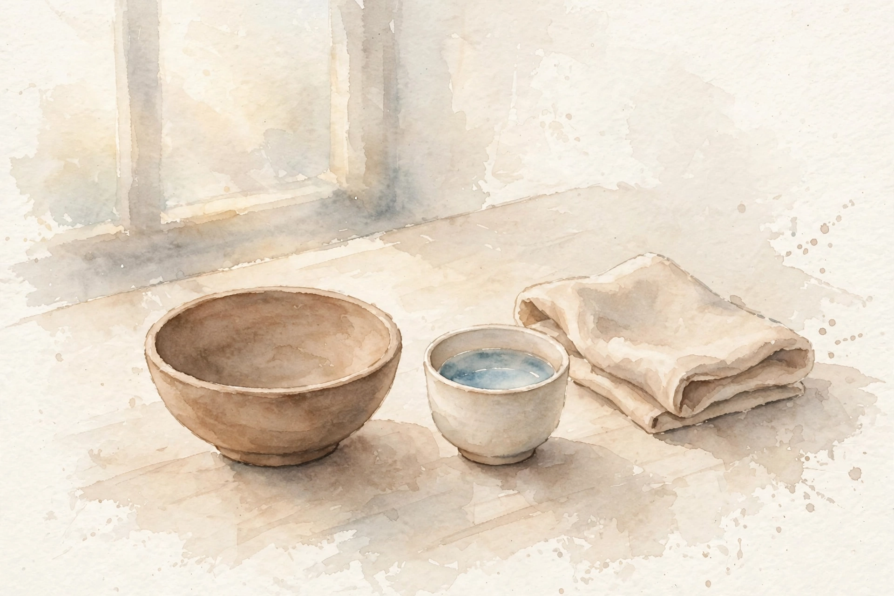

Naval Ravikant · The Monologue · Companion
Your Desires Are Not Yours
A two-minute monologue with no co-host and no mercy: your desires are copied, your needs are tiny, your mind is a monkey. Sit down, turn off the lights, and watch the thing run out of control.

Illustration. The corridor of mirrors: desires copied from reflections. AI-generated watercolor made for this page.
Watch. The official Naval podcast episode video. Use the chapter menu above to jump to any section of this companion as you listen.
The Wisdom Index: every nugget in this companion
00:00
Your desires are secondhand
"most of our desires are picked up through Society": what friends do, what the brother does, what classmates do, what the wife wants. We copy those desires, install them as our own, and drive forward. The monologue is short and unsparing: almost nothing you chase started with you.
Deep down, he says, nobody does it for themselves. Everyone believes they fight for a cause, for the downtrodden, for family. Strip it back and the real list is tiny.
Illustration. The corridor of mirrors: desires copied from reflections of reflections. AI-generated watercolor made for this page.
Wisdom nugget 1
Source factAudit the source of every want
What happened. Naval says desires are copied from the people around us and then mistaken for our own.
Why it matters. A borrowed desire can never satisfy, because it was never yours. You can achieve it and feel nothing.
Principle. For each big want, name the person you copied it from. If you can name them, it is not yours.
00:01
What you actually need
The true list, in his words: "a little bit of food a little bit of water a little bit of place to put your head". Everything above that line is a construct we built on top, copied from each other, layer on layer.
This is not an argument for poverty. It is a calibration tool. When you know the floor, you can see how much of your striving is decoration.

Illustration. What you actually need: a little food, a little water, a place to rest. AI-generated watercolor made for this page.
Wisdom nugget 2
Source factKnow your floor
What happened. Naval reduces true need to food, water, and shelter, and calls everything else a copied construct.
Why it matters. The floor is the reference point. Without it, every desire feels like survival.
Principle. Price your actual needs once a year. Everything you earn above that is optionality, not oxygen.
00:02
Watch the monkey
The practice: sit down sometime, close the door, turn off the lights, and sit by yourself and watch your mind. Do not judge it, do not argue with it, do not fight it. Simply watch it spin out of control.
The image he uses is deliberately crude: the mind as a monkey flinging waste and throwing bananas. It is impossible to control. The question is how you became like that, because a 2-year-old is not like that. A 2-year-old lives in the moment, with no constant uncontrollable thoughts about past or future, and that is what keeps the child happy.
Your mind is like a monkey that's running around flinging feces and throwing bananas everywhere.
Naval Ravikant, from the episode
Where your desires come from
The episode's model: almost everything you want was installed by someone else.
Source. Diagram of the episode's argument. The two lists are the episode's own examples.
Toy: the 60-second mind watch
The episode's exercise: sit, close the door, turn off the lights, and watch your mind run out of control without judging it.
Do not judge it. Do not argue with it. Just watch.
Wisdom nugget 3
Source factObserve before you obey
What happened. Naval prescribes silent self-observation and contrasts the noisy adult mind with the present 2-year-old.
Why it matters. You cannot uncondition what you will not watch. Attention is the prerequisite to change.
Principle. Spend time daily watching your mind without interference. The watching itself is the practice.
00:03
Unconditioning is possible
Can you uncondition the noise? He says it is possible, but different for everybody. There is no technique sold here, no five-step plan. The monologue ends where it must: with the honest admission that the path is personal.
What is not personal is the diagnosis. The desires are borrowed, the needs are tiny, the mind is loud, and the way back starts with watching.
Wisdom nugget 4
Source factNo method, just attention
What happened. Naval closes by saying unconditioning is possible but individual, refusing to sell a universal method.
Why it matters. Honesty about limits is the point. A guru with a method for everyone sells the borrowed-desire game again.
Principle. Borrow the diagnosis, not a method. Build your own practice from watching your own mind.